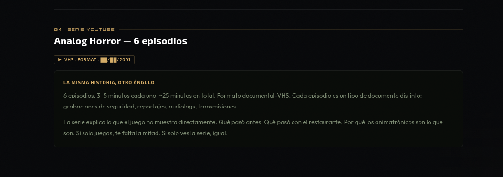
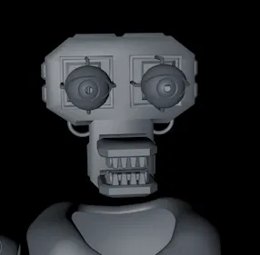
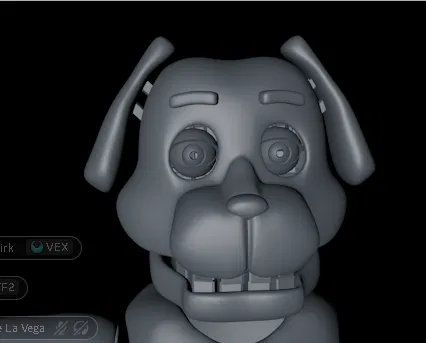

Un fangame de FNaF que empezó en 2021 y no ha parado desde entonces. Una pizzería familiar abandonada desde los 90. Tres animatrónicos que llevan ahí demasiado tiempo. Y una noche que no va a terminar como debería.
Terror analógico y supervivencia nocturna. La premisa es simple: estás en Donnie's Dinners Place, el local lleva una década cerrado, y los animatrónicos no deberían estar activos. Mecánicas clásicas de FNaF — cámaras, puertas, linterna — pero la historia va a otro sitio.
Un fangame de FNaF con historia propia — sin lore importado, sin referencias directas. Yellow Springs, 2001. AnimaTech Corp. Tres animatrónicos que no deberían seguir encendidos.
Referentes visuales: Dormitabis, FNAF 1–4, Half-Life 2. Terror con peso real — no gore gratuito, sino consecuencias y personajes que hacen que te importe lo que pasa. La oscuridad tiene razón de ser.
Yellow Springs, Ohio. Pueblo pequeño, ~3.500 habitantes, donde todo el mundo se conoce. No es un lugar oscuro ni raro. Es exactamente un sitio normal. Eso es lo que lo hace funcionar.
Donnie's Dinners Place tenía tres en escena. Superan los dos metros. Llevan años en el edificio. La pregunta no es si están activos — es qué quieren.
Perro marrón, ojos amarillos. Calmado — el tipo que pone orden sin pedirlo. El primero en moverse.
Coneja rosa-salmón, ojos verdes. La más expresiva del grupo. También la más defectuosa.
Gato negro-gris, ojos morados. Silencioso. Aparece donde no lo esperas. No suele hablar.
La primera noche. El local lleva diez años cerrado. 6 niveles, una hora por nivel. Linterna, puertas, cámaras. Los animatrónicos no deberían estar activos.
Nick despierta en una silla de oficina en el subsuelo. El monitor CRT está apagado. Pulsas E para encenderlo.
Iniciando diagnóstico de unidades... ████████████████████ 100% ERROR: UNIDAD 01 (DONNIE) - SIN RESPUESTA ERROR: UNIDAD 02 (LANY) - SIN RESPUESTA ERROR: UNIDAD 03 (SHADOW) - SIN RESPUESTA Recomendación del sistema: EVACUACIÓN INMEDIATA
Gestión de energía, cámaras de seguridad B/N con grain de película, puertas controladas por sector. Sin «YOU DIED» — solo estática, y después una foto de cámara de seguridad.
El menú principal usa ASCII box art con estética de foto digital antigua. Cada noche tiene documento de contexto: reportaje, audioLog, grabación. No es FNAF con animatrónicos distintos — es otra historia.
Modelado en Cinema 4D R20. Traje exterior e interior (endosqueleto) terminados. Siguientes: torso, cuerpo completo, articulaciones.



Source Engine SDK 2013 Singleplayer + Hammer Editor
Cinema 4D R20 + Blender 3.6 → Crowbar → Source .mdl
Fase de modelado — traje completo de Donnie finalizado (cabeza + torso + cuerpo). Endosqueleto en progreso.
Endosqueleto de Donnie. Modelos de Lany, Shadow, Isaac, The Fox. OST. Mapas del juego. Sublevel de Philip (REF-03).